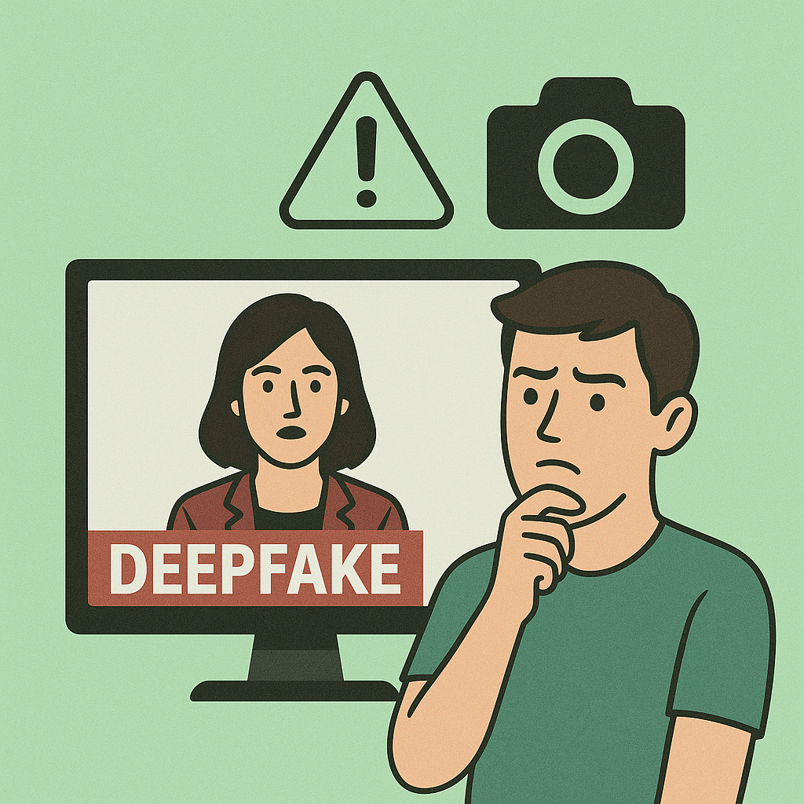
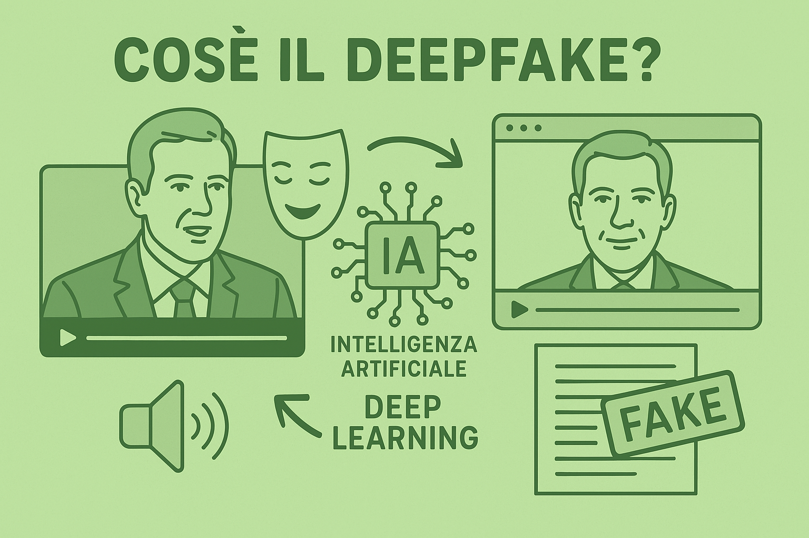
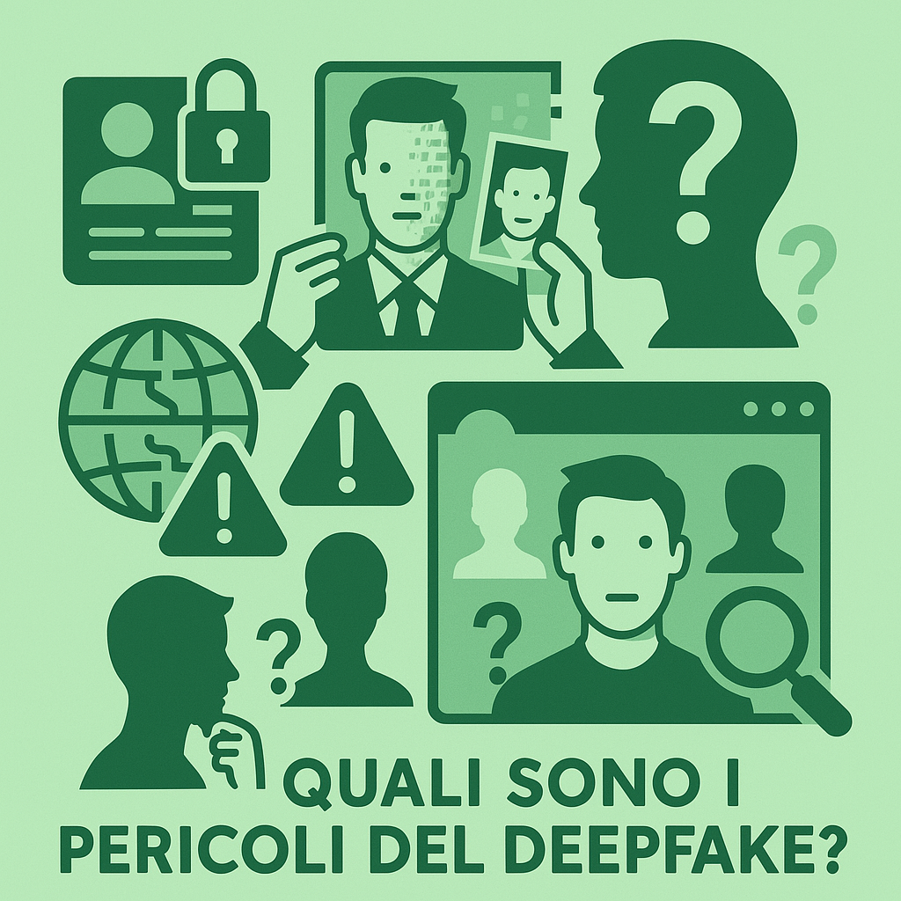

Il detto “un’ immagine vale più di mille parole” non è mai stato così vero e così spaventoso.
In un mondo sempre più di fretta in cui assorbiamo informazioni e dati senza preoccuparci di
verificare le fonti o approfondire l’argomento, la capacità, in mano a chiunque, di poter creare
video e immagini realistici in grado di ingannare anche i più giovani e attenti deve farci paura.
Persone che pronunciano frasi mai dette, azioni generate da un’ IA, verità create semplicemente
scrivendo un input: in un mondo in cui non possiamo fidarci di ciò che vediamo non solo si rischia
la grande diffusione di disinformazione, ma anche la perdita del concetto stesso di realtà.
L’unica cosa che possiamo fare per combattere tutto ciò è quella di imparare a conoscere questi
strumenti, comprenderne il funzionamento e riconoscerne i segnali. Ecco quindi una guida per
comprendere il deepfake.


Cos'è il deep fake?
Il deepfake è una tecnica che utilizza l’intelligenza artificiale, in particolare il deep learning,
per creare video, immagini o registrazioni audio falsi, ma estremamente realistici. Grazie a questa
tecnologia, è possibile far sembrare che una persona stia dicendo o facendo qualcosa che in realtà
non ha mai detto o fatto, manipolando il volto, la voce e i movimenti in modo molto credibile.
Queste creazioni, molto usate nel mondo dell’intrattenimento, possono essere usate per comportamenti
non leciti, come per esempio il furto di identità o la diffusione di fake news.
Come riconoscerli:
Nell’era dell’AI, verificare l’autenticità di un video è diventato importantissimo, soprattutto quando
i deepfake continuano a migliorare in qualità e difficoltà di rilevamento. Esistono diverse tecniche
di verifica deepfake che i professionisti utilizzano per identificare se un video è stato manipolato.
Un’accurata analisi video deepfake si basa su diversi fattori, da anomalie visive a incongruenze nel
suono.
Anomalie nei movimenti facciali o nella sincronizzazione labiale
Differenze nella qualità dei pixel in aree specifiche del video
Incongruenze nell’illuminazione o nelle ombre presenti sulla scena
Incoerenze acustiche o variazioni insolite nella voce
Analisi del comportamento del soggetto rispetto ad altri video autentici
Oltre alle analisi che possiamo fare noi essere umani, i ricercatori hanno sviluppato strumenti
di intelligenza artificiale dedicati all’identificazione dei deepfake. Questi strumenti, spesso basati su
reti neurali avanzate, sono in grado di esaminare con precisione dei dettagli che sarebbero altrimenti
impercettibili all’occhio umano. Ovviamente questi sono mezzi in costante aggiornamento e sviluppo, al
fine di rimanere al passo con i deepfake. Eccone alcuni:
Scanner Deepware
FakeCatcher
DeepFake-o-meter
Attestiv
Rilevatore di deepfake in tempo reale di Intel
Video Authenticator Tool di Microsoft
WeVerify

Quali sono i pericolo del deep fake?
Oltre al furto di identità e alla disinformazione sopracitate, questo strumento è una minaccia
alla libertà di pensiero e rischia di creare una società in cui nessuno crede più a nulla.
Tutto è plausibile, ma nulla è certamente vero. Inoltre è anche possibile creare volti di
persone che non esistono, cosa che può facilitare le truffe online. Sistemi di AI come questi
dovrebbero rispettare il principio di trasparenza, cioè le loro creazioni dovrebbero essere
facilmente identificabili come create da intelligenze artificiali.
Esempi concreti
Se ancora non sei convinto dei pericoli del deepfake ecco alcuni esempi concreti di situazioni
in cui sono stati commessi dei reati:
Danni per 35 milioni di dollari a causa del voice-swapping:Con una telefonata fasulla i
criminali hanno sottratto più di 35 milioni di dollari a una banca con sede a Dubai.
I cybercriminali hanno utilizzato la tecnica deepfake del voice-swapping e nei confronti
del direttore della banca si sono spacciati per un grande gruppo titolare di un conto
presso la banca. Durante i colloqui precedenti, il direttore della banca aveva familiarità
con la voce della sua persona di contatto all’interno dell’azienda. Quindi non ha dubitato
dell’autenticità della chiamata e ha concesso una transazione di oltre 35 milioni di dollari.
Deepfake fa pagare 220 000 euro al CEO di un’azienda energetica: Nel 2019 un CEO di un’azienda
energetica britannica si è fatto imbrogliare da un deepfake. Così il suo presunto superiore della
casa madre lo chiamò per richiedere un trasferimento di denaro d’emergenza. La voce falsata suonava
così autentica che il CEO non aveva dubbi e pensava di parlare con il suo superiore. Tuttavia,
non avrebbe dovuto trasferire il denaro alla casa madre, ma su un conto di terzi. Solo quando il
suo superiore ha nuovamente chiesto denaro, al CEO è suonato il campanello d’allarme. Ma era già
troppo tardi per annullare il trasferimento.
Nel mirino di chi realizza deepfake vi è anche la politica, con la diffusione di contenuti video falsi,
in cui a essere alterata non è soltanto l’immagine del soggetto in questione, ma anche la sua voce.
Gli obiettivi, in questo caso, vanno dal pilotare l’opinione pubblica al confonderla, fino ad aumentare
la sfiducia nelle Istituzioni e nelle fonti di informazione. Ormai molto noto il caso di deepfake che
ha coinvolto il Presidente degli Stati Uniti d’America Donald Trump.